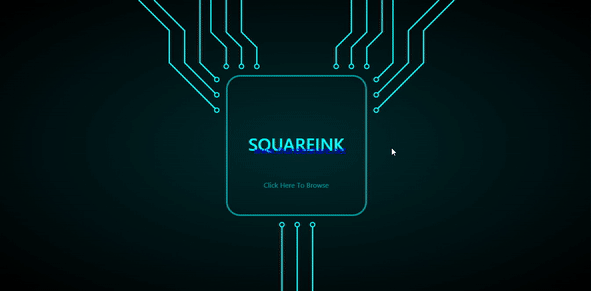

<div class="modal-content modal-content-squareink">
    <div class="pageBody">
        <div>
            <h1>Squareink Studio</h1>
        </div>
        <div>
            <div>
                <h3>Website Overview</h3>
                
            </div>
            <h3>&middot;UI Development&middot;</h3>
            <div>
                <div>
                    <h5>Layouts</h5>
                    <p>&middot; Designed
                        <b>Circuit Board</b> as the main page layout with animations</p>
                    <p>&middot; Adopted
                        <b>Nintendo Switch</b> as the project page style with buttons and images</p>
                    <h5>Styles</h5>
                    <p>&middot;Created a
                        <b>Gradient Color</b> of black and deep blue as the background color</p>
                    <p>&middot;Set
                        <b>Pure Color</b> aqua as the border color to increase contrast for better vistual effects</p>
                    <p>&middot;Imported
                        <b>SVG Image</b> as the image to iconically prompt its functionality</p>

                    <h5>Animations</h5>
                    <p>&middot;Created CSS Animations such as
                        <b>Key Frames</b> to show and hide images</p>
                    <p>&middot;Calculated
                        <b>SVG Path</b> to make the animations for electricity line</p>

                    <h5>Contorlls</h5>
                    <p>&middot;Implemented
                        <b>onTouch Events</b> to handle contorllings. Players could swipe on screen to play rather than
                        just click
                    </p>
                    <p>&middot;Attached
                        <b>onClick Listener</b> to functional buttons </p>
                </div>
            </div>
            <h3>&middot;Functionality&middot;</h3>
            <div>
                <h5>Page Switch</h5>
                <p>&middot;Implemented
                    <b>JQuery Scroll Methods</b> to switch between pages.
                </p>
            </div>
        </div>
    </div>
</div>